import matplotlib.pyplot as plt
import polars as pl
import seaborn as sns
import pyprojroot
from plotnine import aes, facet_grid, geom_boxplot, geom_line, geom_point, ggplot
ROOT = pyprojroot.here()2 - Visualizaciones
En Python hay muchos paquetes para hacer gráficos. En esta clase vamos a trabajar con tres de los más usados:
- Matplotlib: ofrece herramientas de bajo nivel y permite controlar casi todos los detalles del gráfico.
- Seaborn: está construido sobre Matplotlib y trae funciones pensadas para análisis de datos, con menos trabajo manual.
- Plotnine: implementa una gramática de gráficos similar a
ggplot2, donde el gráfico se arma combinando capas.
Matplotlib
Empezamos con matplotlib.pyplot, que expone funciones directas para construir gráficos. Vamos a usar el conjunto palmerpenguins.
datos = pl.read_csv(ROOT / "datos" / "palmerpenguins.csv")datos.head()
shape: (5, 9)
| species | island | bill_length_mm | bill_depth_mm | flipper_length_mm | body_mass_g | sex | year | |
|---|---|---|---|---|---|---|---|---|
| i64 | str | str | f64 | f64 | i64 | i64 | str | i64 |
| 1 | "Adelie" | "Torgersen" | 39.1 | 18.7 | 181 | 3750 | "male" | 2007 |
| 2 | "Adelie" | "Torgersen" | 39.5 | 17.4 | 186 | 3800 | "female" | 2007 |
| 3 | "Adelie" | "Torgersen" | 40.3 | 18.0 | 195 | 3250 | "female" | 2007 |
| 4 | "Adelie" | "Torgersen" | null | null | null | null | null | 2007 |
| 5 | "Adelie" | "Torgersen" | 36.7 | 19.3 | 193 | 3450 | "female" | 2007 |
Un gráfico de dispersión nos permite comparar dos variables numéricas observación por observación.
plt.figure(figsize=(7, 5))
plt.scatter(datos["bill_length_mm"], datos["bill_depth_mm"], alpha=0.7)
plt.xlabel("Longitud del pico (mm)")
plt.ylabel("Profundidad del pico (mm)")
plt.title("Palmer Penguins")
plt.show()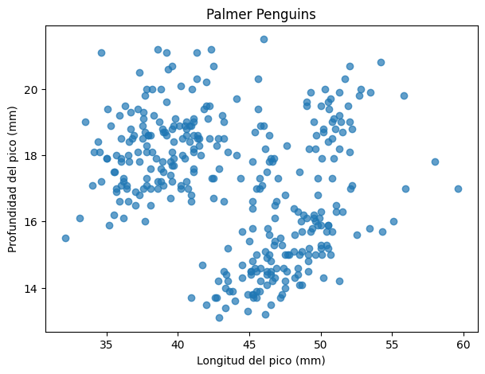
Con hist() podemos mirar la distribución de una variable numérica.
plt.figure(figsize=(7, 5))
plt.hist(datos["flipper_length_mm"].drop_nulls(), bins=20)
plt.xlabel("Longitud de aleta (mm)")
plt.ylabel("Frecuencia")
plt.title("Palmer Penguins")
plt.show()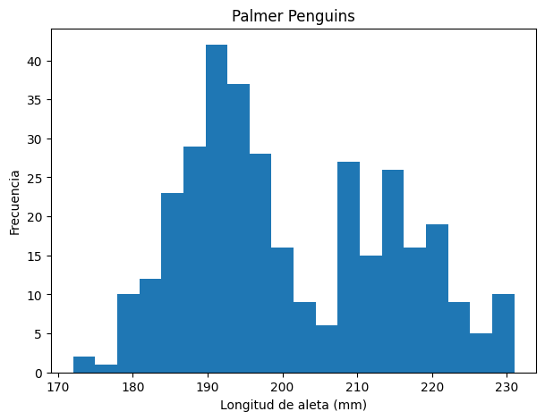
También podemos construir un boxplot. En este caso comparamos la distribución del peso corporal entre especies.
especies = datos.select("species").drop_nulls().unique().sort("species")["species"].to_list()
datos_boxplot = [
datos.filter(pl.col("species") == especie)["body_mass_g"].drop_nulls().to_list()
for especie in especies
]
plt.figure(figsize=(7, 5))
plt.boxplot(datos_boxplot, tick_labels=especies)
plt.xlabel("Especie")
plt.ylabel("Peso corporal (g)")
plt.title("Palmer Penguins")
plt.show()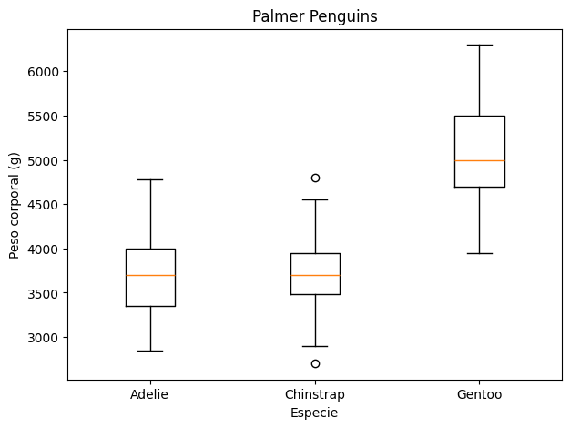
Seaborn
seaborn ofrece funciones de más alto nivel para gráficos estadísticos. Usamos el mismo conjunto de datos para comparar.
.scatterplot() elabora un gráfico de dispersión.
sns.scatterplot(x="bill_length_mm", y="bill_depth_mm", data=datos);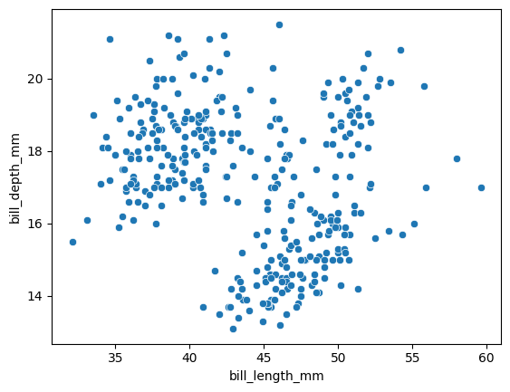
Con el argumento hue podemos indicar el nombre de una variable que se usa para colorear los puntos.
sns.scatterplot(x="bill_length_mm", y="bill_depth_mm", hue="sex", data=datos);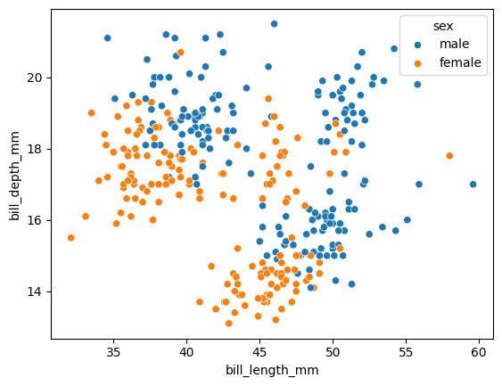
sns.scatterplot(x="bill_length_mm", y="bill_depth_mm", hue="species", data=datos);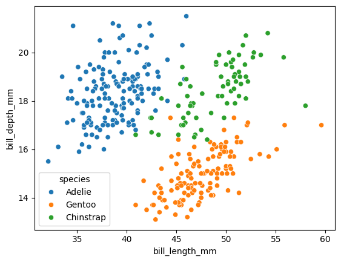
También contamos con la función .histplot(), que sirve para generar histogramas.
sns.histplot(x="flipper_length_mm", data=datos);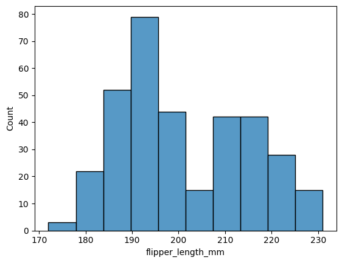
Esta función también nos permite usar hue.
sns.histplot(x="flipper_length_mm", hue="sex", data=datos);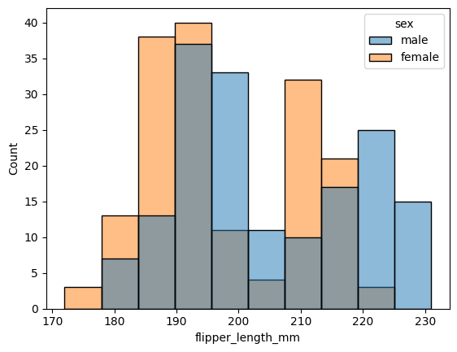
sns.histplot(x="flipper_length_mm", hue="species", data=datos);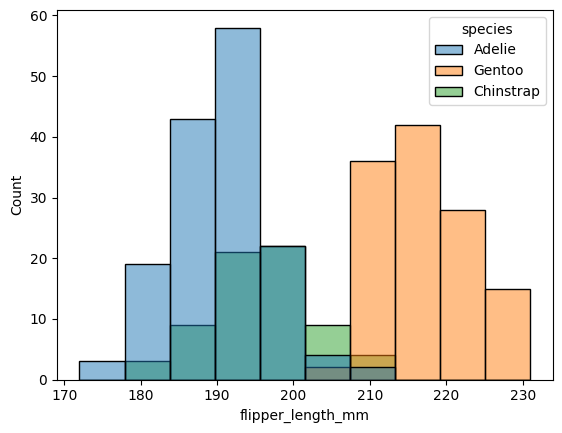
Podemos controlar la cantidad de intervalos en el histograma con el argumento bins.
sns.histplot(x="flipper_length_mm", hue="species", bins=20, data=datos);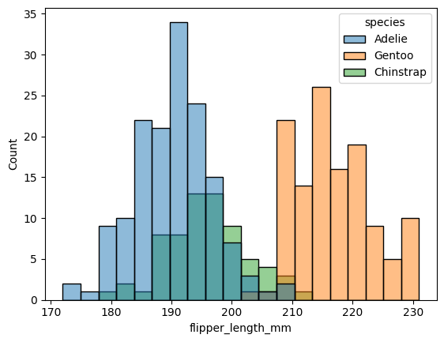
También podemos modificar cómo se dibujan las alturas. En este caso eliminamos las barras y dejamos solo los contornos, lo que facilita comparar especies.
sns.histplot(x="flipper_length_mm", hue="species", bins=20, element="step", data=datos);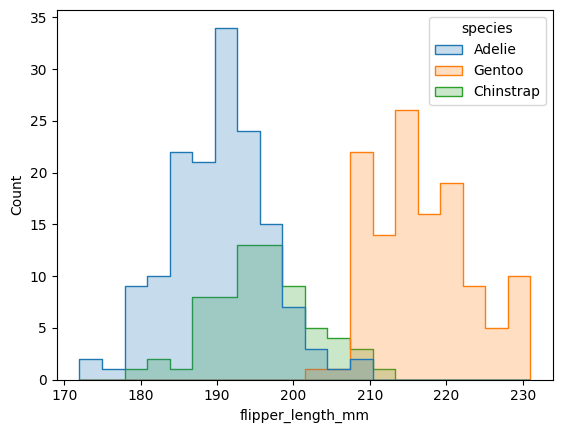
Como su nombre lo indica, la función .boxplot() genera boxplots.
g = sns.boxplot(x="island", y="body_mass_g", hue="species", data=datos)
g.set_xlabel("Isla")
g.set_ylabel("Peso");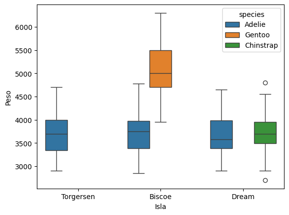
Las funciones de seaborn devuelven objetos que podemos seguir modificando. En el bloque anterior usamos ese objeto para cambiar las etiquetas de los ejes.
Nota: es equivalente hacer g.set(xlabel="Isla", ylabel="Peso").
Otro gráfico frecuente es el gráfico de barras, donde se muestra una cantidad. Por ejemplo, la cantidad de observaciones por especie a través de countplot().
sns.countplot(x="species", data=datos);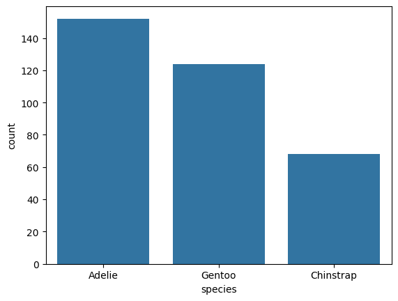
También podemos contar observaciones por especie e isla.
sns.countplot(x="species", hue="island", data=datos);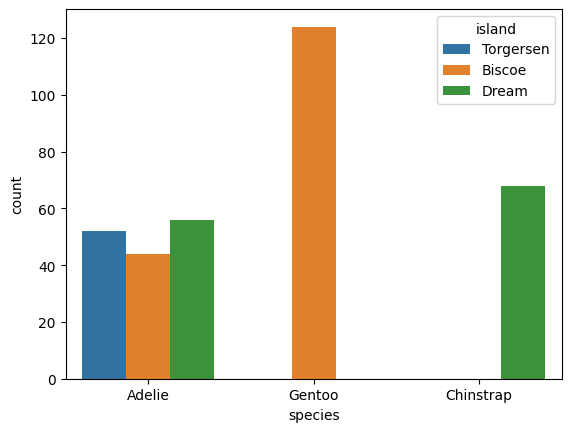
En el gráfico anterior se hace evidente que no todas las especies se encontraron en todas las islas.
También es posible hacer que las barras sean horizontales cambiando el nombre del argumento de x a y.
sns.countplot(y="species", hue="island", data=datos);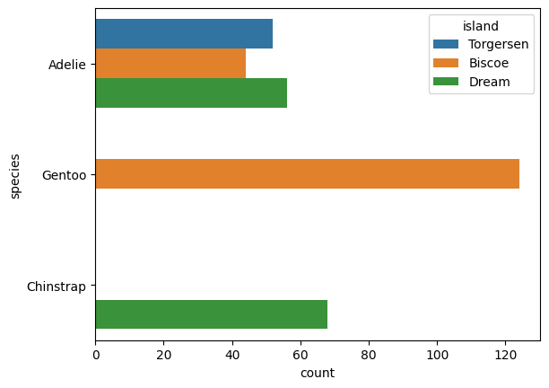
También es posible utilizar .barplot(). Esta función no cuenta observaciones por nosotros, sino que tenemos que pasarle la variable que contiene la altura de las barras.
Para eso construimos un DataFrame con las categorías y las cantidades, y luego lo usamos en sns.barplot().
df_cantidad_isla = datos.group_by("island").agg(pl.len().alias("cantidad"))
df_cantidad_isla
shape: (3, 2)
| island | cantidad |
|---|---|
| str | u32 |
| "Torgersen" | 52 |
| "Dream" | 124 |
| "Biscoe" | 168 |
sns.barplot(x="island", y="cantidad", data=df_cantidad_isla);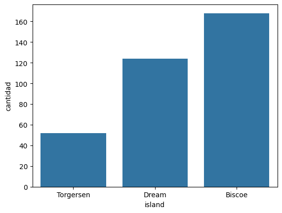
Si bien esta función nos hace trabajar más, también nos da más flexibilidad. Por ejemplo, en vez de la cantidad de pingüinos podemos graficar el peso promedio por especie.
df_pesos_promedios = datos.group_by("species").agg(pl.col("body_mass_g").mean().alias("peso promedio"))
df_pesos_promedios
shape: (3, 2)
| species | peso promedio |
|---|---|
| str | f64 |
| "Adelie" | 3700.662252 |
| "Chinstrap" | 3733.088235 |
| "Gentoo" | 5076.01626 |
sns.barplot(x="species", y="peso promedio", data=df_pesos_promedios);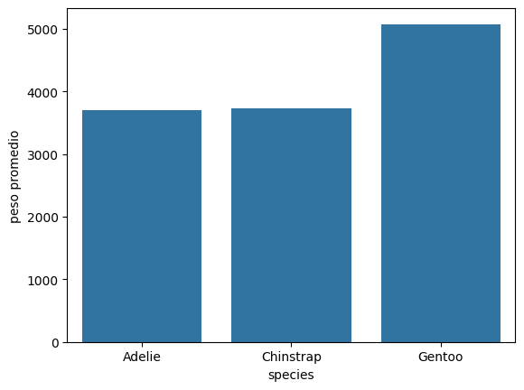
Con este gráfico podemos observar que el peso promedio es similar para Adelie y Chinstrap y que es mayor para la especie Gentoo.
También podemos utilizar el conjunto original y dejar que barplot calcule el promedio. La barra gris da una idea de la incertidumbre de esa media.
sns.barplot(x="species", y="body_mass_g", data=datos);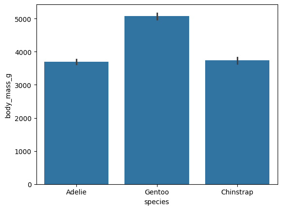
Hay funciones más sofisticadas. Por ejemplo, .lmplot() genera un gráfico de dispersión y le superpone una recta de regresión.
g = sns.lmplot(x="flipper_length_mm", y="body_mass_g", data=datos)
g.set_xlabels("Longitud de alas")
g.set_ylabels("Peso");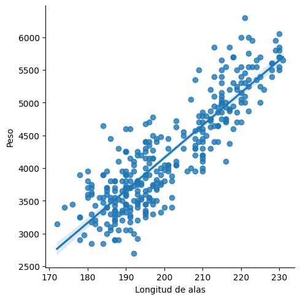
También podemos discriminar por especie y obtener una recta para cada grupo.
g = sns.lmplot(
x="flipper_length_mm", y="body_mass_g", hue="species",
height=7, data=datos
)
g.set_xlabels("Longitud de alas")
g.set_ylabels("Peso");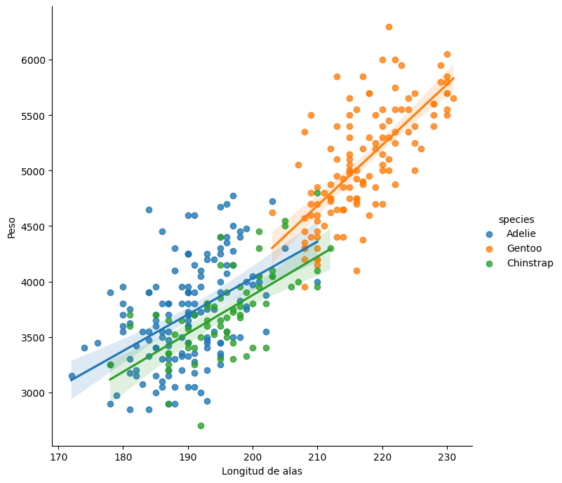
La función .pairplot() permite visualizar relaciones entre varias variables del conjunto de datos.
En la diagonal principal muestra la distribución de cada variable. En los otros paneles aparecen gráficos de dispersión para cada par de variables.
sns.pairplot(datos.select("bill_length_mm", "bill_depth_mm", "flipper_length_mm", "body_mass_g").to_pandas());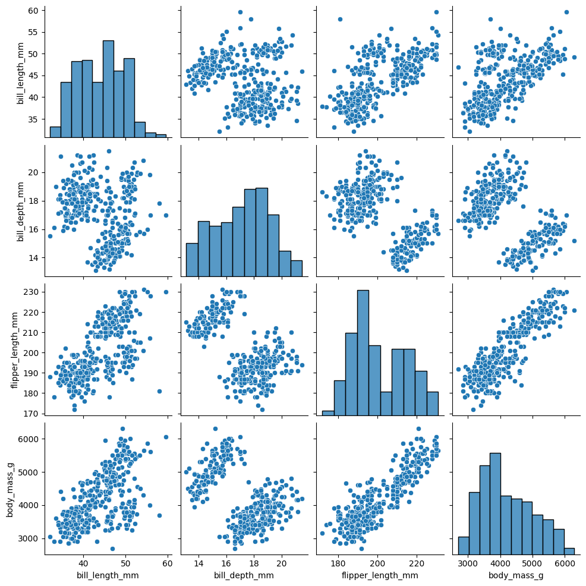
sns.pairplot(
datos.select("bill_length_mm", "bill_depth_mm", "flipper_length_mm", "body_mass_g", "species").to_pandas(),
hue="species"
);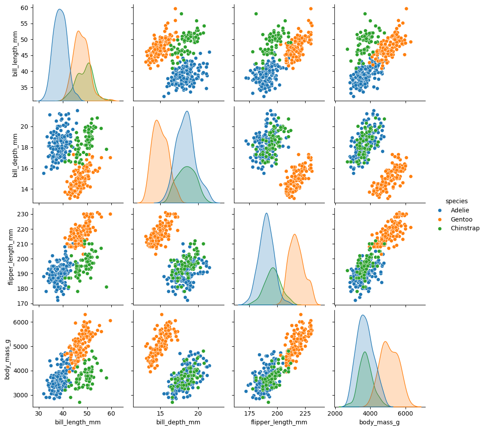
En este caso, como usamos una tercera dimensión para colorear, seaborn utiliza una estimación de densidad en la diagonal. Si queremos volver a obtener histogramas, usamos el argumento diag_kind.
sns.pairplot(
datos.select("bill_length_mm", "bill_depth_mm", "flipper_length_mm", "body_mass_g", "species").to_pandas(),
hue="species",
diag_kind="hist"
);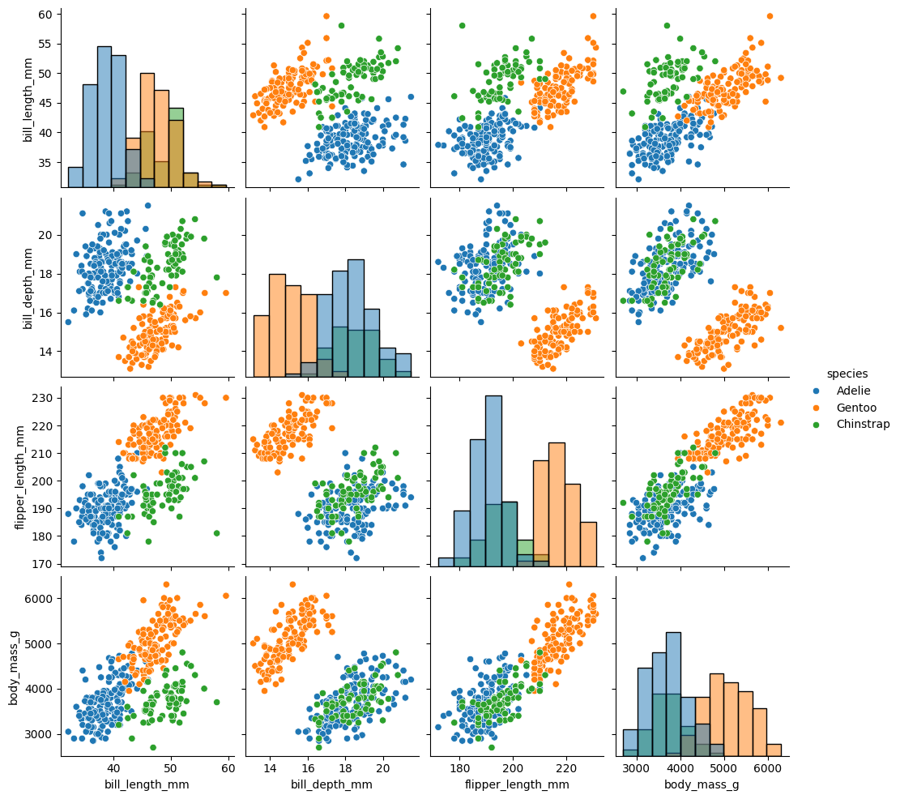
También podemos elegir qué variables usar en cada eje.
sns.pairplot(
datos.to_pandas(),
x_vars=["bill_length_mm", "bill_depth_mm", "flipper_length_mm"],
y_vars=["bill_length_mm", "bill_depth_mm"],
);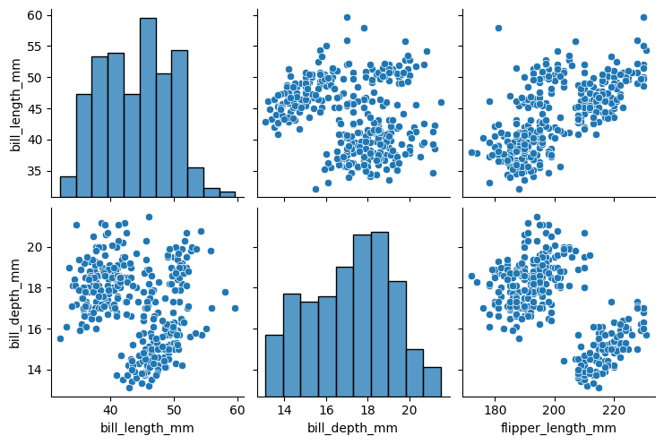
sns.pairplot(
datos.to_pandas(),
x_vars=["bill_length_mm", "bill_depth_mm", "flipper_length_mm"],
y_vars=["bill_length_mm", "bill_depth_mm"],
hue="species"
);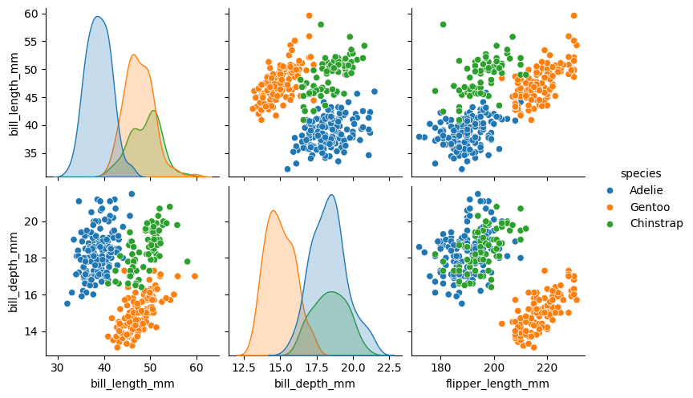
Si nos interesa guardar el gráfico generado, podemos utilizar el método .savefig().
g = sns.pairplot(
datos.to_pandas(),
x_vars=["bill_length_mm", "bill_depth_mm", "flipper_length_mm"],
y_vars=["bill_length_mm", "bill_depth_mm"],
hue="species"
);
# g.savefig("grafico.png")Plotnine
Ahora pasamos a plotnine. Vamos a trabajar con Gapminder y a reproducir tres tipos de gráficos que también podríamos construir a mano: una dispersión, una serie temporal y un boxplot.
gap = pl.read_csv(ROOT / "datos" / "gapminder" / "gapminder.csv")
paises = pl.read_csv(ROOT / "datos" / "gapminder" / "paises.csv")
gapminder = (
gap.join(paises, on="pais", how="left")
.with_columns((pl.col("pib") / pl.col("poblacion") / 365).alias("pbi_per_capita_por_dia"))
)
gap_1990 = gapminder.filter(pl.col("año") == 1990)
argentina = gapminder.filter(pl.col("pais") == "Argentina")
paises_comparacion = ["Argentina", "Brasil", "Chile"]
comparados = gapminder.filter(pl.col("pais").is_in(paises_comparacion))
gap_2010 = gapminder.filter(
(pl.col("año") == 2010),
pl.col("pbi_per_capita_por_dia").is_not_null(),
pl.col("continente").is_not_null()
)Descripción de los datos
| Columna | Descripción |
|---|---|
pais |
Nombre del país o territorio. |
año |
Año al que corresponde la observación. |
mortalidad_infantil |
Muertes de niños durante el primer año de vida por cada 1000 nacidos vivos. |
esperanza_de_vida |
Cantidad de años que viviría un recién nacido si se mantuvieran las tasas de mortalidad observadas. |
fecundidad |
Cantidad de hijos que tendría una mujer si se mantuvieran las tasas observadas. |
poblacion |
Cantidad total de habitantes del territorio. |
pib |
Producto interno bruto total estimado. |
continente |
Continente asignado al país o territorio. |
region |
Subregión geográfica dentro del continente. |
pbi_per_capita_por_dia |
Columna derivada calculada como pib / poblacion / 365. |
Empezamos con una dispersión para el año 1990.
ggplot(gap_1990) + aes(x="fecundidad", y="esperanza_de_vida") + geom_point()/home/tomas/miniconda3/lib/python3.13/site-packages/plotnine/layer.py:374: PlotnineWarning: geom_point : Removed 1 rows containing missing values.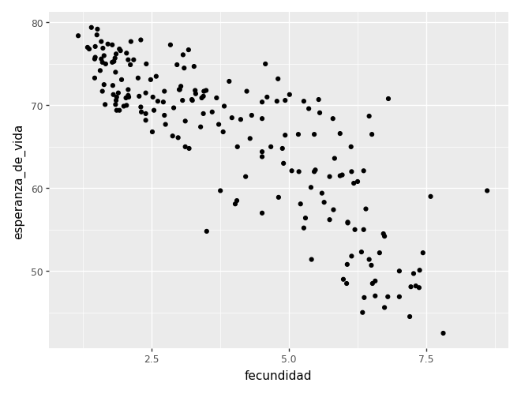
ggplot(gap_1990) + aes(x="fecundidad", y="esperanza_de_vida", color="continente") + geom_point()/home/tomas/miniconda3/lib/python3.13/site-packages/plotnine/layer.py:374: PlotnineWarning: geom_point : Removed 1 rows containing missing values.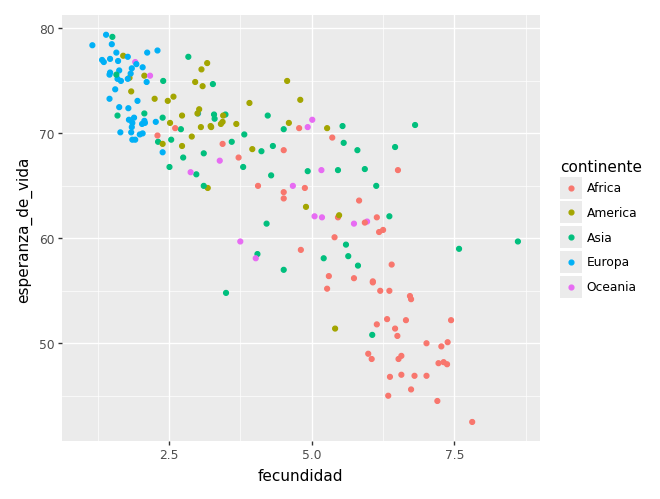
Luego tomamos un solo país y graficamos la fecundidad de Argentina a lo largo del tiempo.
ggplot(argentina) + aes(x="año", y="fecundidad") + geom_line() + geom_point()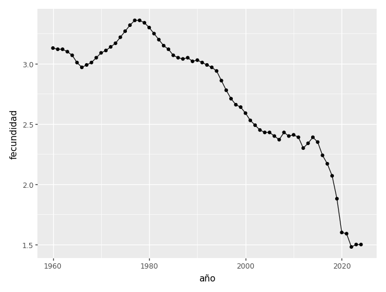
Por último, comparamos la distribución del PBI per cápita por día entre continentes para el año 2010.
ggplot(gap_2010) + aes(x="continente", y="pbi_per_capita_por_dia") + geom_boxplot()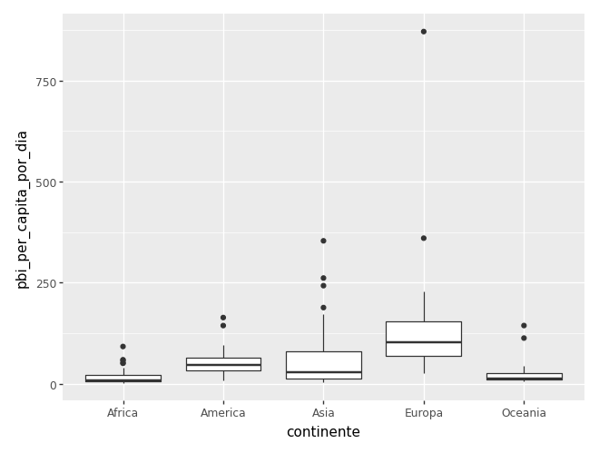
vector_años = [1960, 2013]
(
ggplot(gapminder.filter(pl.col("año").is_in(vector_años)))
+ aes(x="fecundidad", y="esperanza_de_vida", color="continente")
+ geom_point()
+ facet_grid("año ~ .")
)/home/tomas/miniconda3/lib/python3.13/site-packages/plotnine/layer.py:374: PlotnineWarning: geom_point : Removed 2 rows containing missing values.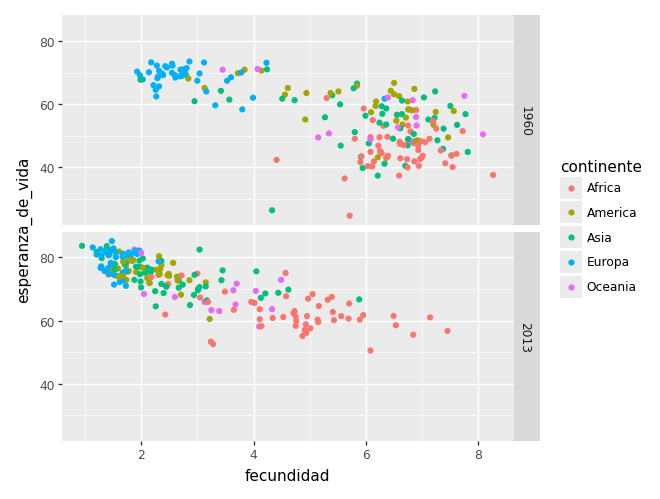
ggplot(comparados) + aes(x="año", y="fecundidad", color="pais") + geom_line()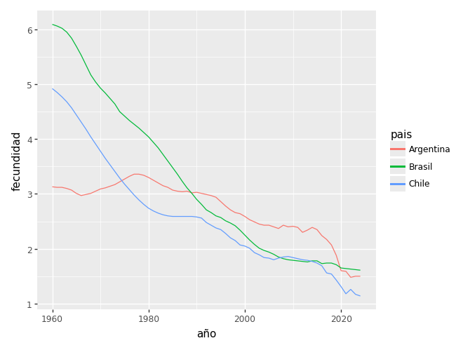